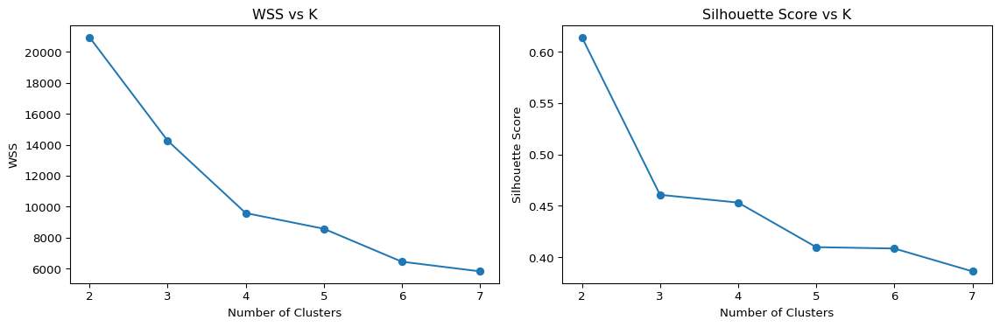

In this section, I implement the K-Means clustering algorithm from scratch in Python, visualize its iterative process, and compare the results with those from scikit-learn’s built-in implementation. The analysis is based on the Palmer Penguins dataset, using the bill_length_mm and flipper_length_mm features.
Dataset Preparation
import pandas as pdimport numpy as np# Load datasetpenguins = pd.read_csv("palmer_penguins.csv")# Select features and drop missing valuespenguins = penguins[['bill_length_mm', 'flipper_length_mm']].dropna()X = penguins.values# Quick summaryprint(penguins.describe())
bill_length_mm flipper_length_mm
count 333.000000 333.000000
mean 43.992793 200.966967
std 5.468668 14.015765
min 32.100000 172.000000
25% 39.500000 190.000000
50% 44.500000 197.000000
75% 48.600000 213.000000
max 59.600000 231.000000
Custom K-Means Implementation
Define core functions: - euclidean_distance: compute distance between points
initialize_centroids: random selection of initial centroids
assign_clusters: assign each point to nearest centroid
To evaluate clustering quality, both the Within-Cluster Sum of Squares (WSS) and the Silhouette Score are computed for values of K ranging from 2 to 7.
def compute_wss(X, labels, centroids): total =0.0for i inrange(centroids.shape[0]): cluster_pts = X[labels == i] total += np.sum((cluster_pts - centroids[i]) **2)return totaldef silhouette_score_custom(X, labels): n = X.shape[0] unique_labels = np.unique(labels) sil_vals = np.zeros(n)for i inrange(n): own = labels[i] same = X[labels == own]# a_i: mean distance to points in same cluster a = np.mean(np.linalg.norm(same - X[i], axis=1))# b_i: min mean distance to points in other clusters b = np.min([ np.mean(np.linalg.norm(X[labels == other] - X[i], axis=1))for other in unique_labels if other != own ]) sil_vals[i] = (b - a) /max(a, b)return np.mean(sil_vals)wss_list = []sil_list = []Ks =range(2, 8)for k in Ks: centroids, labels = kmeans_custom(X, k) wss_list.append(compute_wss(X, labels, centroids)) sil_list.append(silhouette_score_custom(X, labels))import matplotlib.pyplot as pltfig, axes = plt.subplots(1, 2, figsize=(12, 4))axes[0].plot(Ks, wss_list, marker='o')axes[0].set_title('WSS vs K')axes[0].set_xlabel('Number of Clusters')axes[0].set_ylabel('WSS')axes[1].plot(Ks, sil_list, marker='o')axes[1].set_title('Silhouette Score vs K')axes[1].set_xlabel('Number of Clusters')axes[1].set_ylabel('Silhouette Score')plt.tight_layout()plt.show()

Interpretation
WSS (Within-Cluster Sum of Squares): A sharp decrease in WSS is observed from K = 2 to K = 3, followed by a more gradual decline for larger K values. This creates a noticeable “elbow” at K = 3, which typically suggests an optimal number of clusters—beyond which additional clusters contribute little to reducing within-group variance.
Silhouette Score: The highest silhouette score appears at K = 2, indicating the strongest separation between clusters. However, the score remains relatively stable from K = 3 to K = 5, with only a slight drop at K = 3, suggesting that cluster cohesion and separation are still well maintained.
Conclusion
Although K = 2 has the highest silhouette score, the WSS plot strongly supports K = 3 as the elbow point. Considering both metrics, K = 3 provides a solid compromise between model simplicity and clustering quality, making it a well-balanced choice for this dataset.